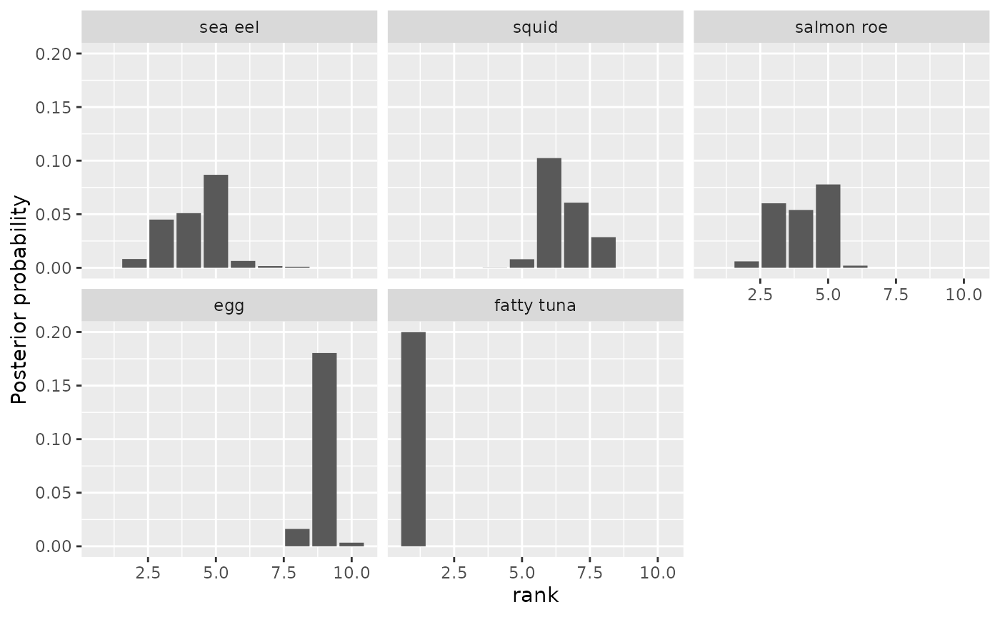
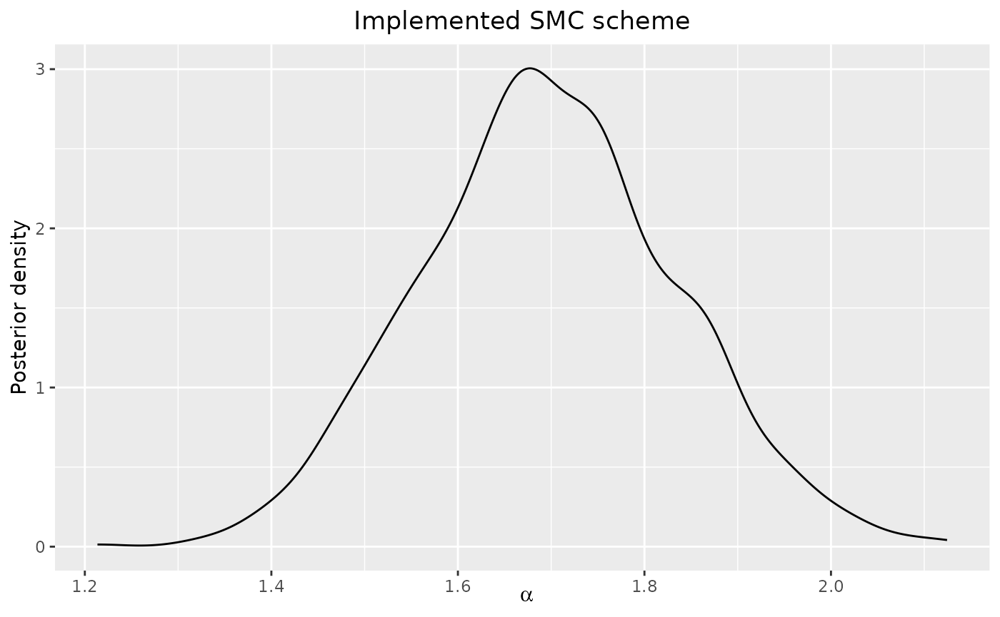
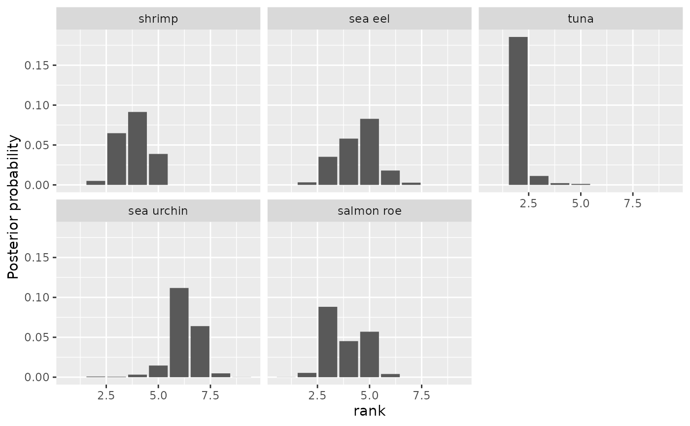
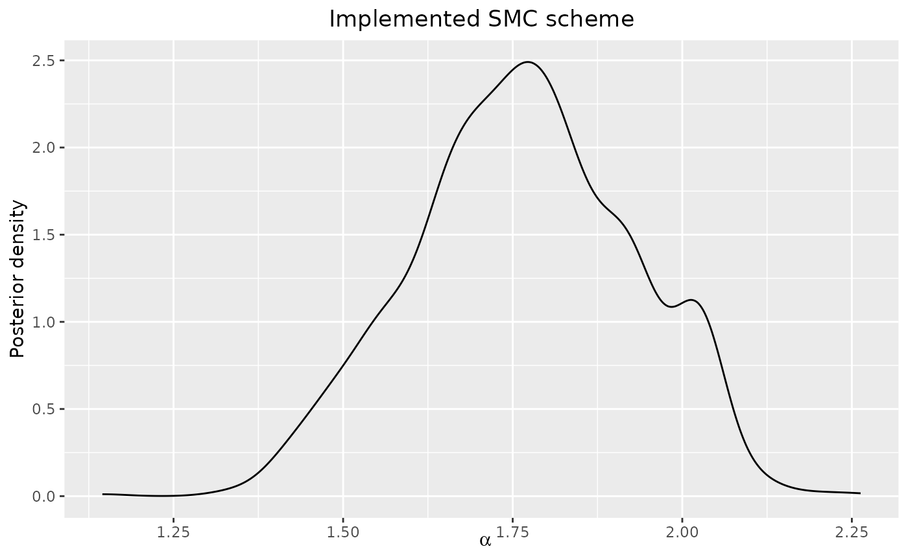
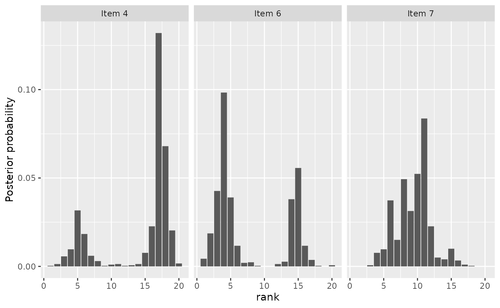
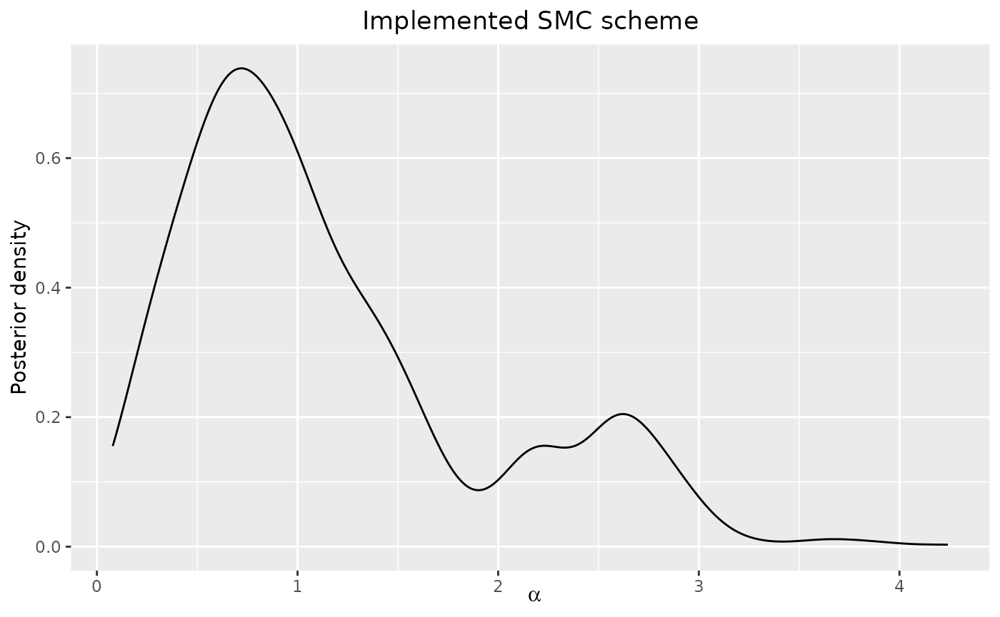

Sequential Inference with the Mallows Model
Anja Stein
2021-10-25
Source:vignettes/SMC-Mallows.Rmd
SMC-Mallows.RmdThis vignette describes the SMC-Mallows functions of the
package. These use Sequential Monte Carlo (SMC) algorithms to provide
updated approximations to the posterior distribution of a single Mallows
model. We consider scenarios where we receive sequential information in
the form of complete rankings, partial rankings and updated rankings
from existing individuals who have previously provided a (partial)
ranking. We use an alternative data augmentation method, called the
pseudolikelihood approach, when we are using the footrule and Spearman
distance functions instead of using an independent sampler.
SMC-Mallow uses functions similar to their base MCMC
counterparts in the BayesMallows package, to visualise and
analyse the posterior distributions.
For an in-depth treatment of the implemented methodology, see Stein (2023).
SMC-Mallows functions
| Function Name | Description |
|---|---|
smc_mallows_new_users |
Runs the SMC algorithm for case where we observe full rankings as new observational data. |
smc_mallows_new_item_rank |
Runs the SMC algorithm for case where we observe updated partial rankings as from existing users. |
plot |
Plots posterior density of \(\boldsymbol{\rho}\) or \(\alpha\) for a selection of items. |
compute_consensus |
Computes the CP estimate or MAP estimate of the latent ranks. |
compute_posterior_intervals |
Computes the Bayesian posterior intervals for \(\alpha\) and \(\boldsymbol{\rho}\). |
Introduction
We provide a summary on the Bayesian Mallows model and the proposed
Sequential Monte Carlo framework which updates the parameter estimates
of the posterior each time we receive new observations for a fixed
computational cost. More information on the Bayesian Mallows model can
found in Vitelli et al. (2018) and Liu et al. (2019), and a vignette on the
BayesMallows R package can be found in Sørensen et al. (2020). A general discussion on SMC can
be found in Del Moral, Doucet, and Jasra (2006) and
Doucet and Johansen (2009).
Notation
We have set of \(m\) distinct items, labelled \(\mathcal{A} = \{A_1, \dots, A_m \}\), and we are asked to rank these items in order of personal preference with respect to some attribute. This information can be expressed as a ranking \(\boldsymbol{R} = \{ R_1 , \dots , R_m\}\), which is a mapping \(\boldsymbol{R}:\mathcal{A} \rightarrow \mathcal{P}_m\), where \(\mathcal{P}_m\) is the space of \(m\)-dimensional permutations of \(\{1, \dots, m\}\). Each \(R_i \in \{1,\dots,m\}\) corresponds to the rank of an item \(A_i\). We fundamentally assume that the preference information we receive from a group of individuals is transitive, i.e., each individual does not contradict themselves when specifying their preferences. In other words, for any three distinct items \(\{A_i,A_j,A_k\}\) in a set, then if \(A_i \prec A_j\) and \(A_j \prec A_k\), then it must follow that \(A_i \prec A_k\). Sometimes, we are unable to provide full rankings, so instead we provide a ranking for a subset of the items in \(\mathcal{A}\). These are referred to as partial rankings. Partial rankings can occur either randomly or an individual can specify their top-\(k\) ranked items. In this scenario, we will need perform data augmentation in order to estimate the parameters of the Mallows model.
The Bayesian Mallows Model
The Mallows model (Mallows 1957) is a probability distribution for ranking data. The probability of observing a ranking \(\boldsymbol{R}\) is defined as
\[p(\boldsymbol{R}) = p(\boldsymbol{R}|\boldsymbol{\rho},\alpha) =\frac{1}{Z_m(\alpha)} \exp \lefts\{ -\frac{\alpha}{m} { d(\boldsymbol{R}, \boldsymbol{\rho})} \right\},\]
where: \(\boldsymbol{\rho} \in
\mathcal{P}_m\) is the consensus ranking; \(\alpha > 0\) is the scale parameter
which represents the variability in rankings within the group of
individuals around the consensus ranking; and \(Z_m(\alpha)\) is the normalisation
constant. The distance function, \(d(\cdot,\cdot) : \mathcal{P}_m \times
\mathcal{P}_m \rightarrow [0,\infty)\), measures the
‘’closeness’’ of a ranking to the consensus ranking. The Mallows
literature discusses the use of a right-invariant distance function,
which means that the distance between two items is unaffected by
relabelling of items (Diaconis 1988). The distance metrics
that the BayesMallows R package currently uses are:
footrule, Spearman, Cayley, Kendall and Hamming. This also means that
the normalisation constant is independent of the consensus ranking.
Vitelli et al. (2018) extended the Mallows model to incorporate a Bayesian framework for inference. A uniform prior is elicited for the consensus ranking \(\pi(\boldsymbol{\rho}) = (m!)^{-1} 1_{\mathcal{P}_m} (\boldsymbol{\rho})\) in the space of \(\mathcal{P}_m\), and an exponential prior for \(\alpha\), with density \(\pi(\alpha|\lambda) = \lambda \exp \{ -\lambda \alpha \} 1_{[0,\infty)}(\alpha)\). Given \(M\) observed complete rankings and the prior distributions \(\pi(\boldsymbol{\rho})\) and \(\pi(\alpha)\), assuming prior independence of these variables, we have the following posterior density, known as the Bayesian Mallows model,
\[ \pi(\boldsymbol\rho, \alpha | \boldsymbol{R}_1, \dots, \boldsymbol{R}_M) \propto \frac{\pi(\boldsymbol\rho)\pi(\alpha) }{[Z(\alpha)]^M} \exp \left\{ - \frac{\alpha}{m} \sum_{j=1}^{M} d(\boldsymbol{R}_j, \boldsymbol\rho ) \right\}.\]
Any posterior estimates of interest, such as the marginal posterior for \(\boldsymbol{\rho}\), are obtained through the use of Metropolis-Hastings based Markov Chain Monte Carlo (MCMC) algorithm. Full details of the algorithm can be found in Vitelli et al. (2018). In each iteration of the algorithm, a new consensus ranking \(\boldsymbol{\rho}'\) is proposed to update \(\boldsymbol{\rho}\) according to a distribution which is centered around the current rank \(\boldsymbol{\rho}\). The proposal step for \(\boldsymbol{\rho}\) is done using the leap-and-shift proposal algorithm of Vitelli et al. (2018) and a new value \(\alpha'\) is sampled from the log-normal distribution to update the current value of \(\alpha\).
Inference on the Bayesian Mallows model can sample the posterior
distribution of the unknown consensus ranking and scale parameter using
a variety of observed data including: full rankings, incomplete rankings
(e.g. top-\(k\) rankings and ranks
missing at random), and implicit data such as pairwise comparisons. For
example, in the case of partial rankings, we can create augmented full
ranking \(\tilde{R}_1, \dots,
\tilde{R}_M\) by using an independent sampler for each assessor
containing the set of rankings not already chosen. The MCMC algorithm
alternates between sampling a new value of \(\boldsymbol{\rho}\) and \(\alpha\) given the current \(\tilde{R}_1, \dots, \tilde{R}_M\) and
sampling \(\tilde{R}_1, \dots,
\tilde{R}_M\) given the current values of \(\boldsymbol{\rho}\) and \(\alpha\). The existing methods are
discussed in Vitelli et al. (2018) and are
provided in the BayesMallows R package (Sørensen et al. 2020).
Sequential Monte Carlo
Sequential Monte Carlo (SMC) methods are a class of sampling algorithms which are used to estimate a sequence of target distributions given a stream of observations over discrete time. Each target distribution is approximated by a collection of random samples, termed particles, at each time step and evolve according to importance sampling and resampling steps. The literature on SMC methods is vast and diverse, but we are interested in using SMC as an alternative to MCMC methods (Chopin 2002). A nice summary of the different variants of SMC is given in Del Moral, Doucet, and Jasra (2006).
In SMC, the aim is to approximate a sequence of target distributions \(\pi_t(\boldsymbol{\theta})\) with parameters \(\boldsymbol{\theta}\) that we wish to estimate given a set of observed data \(D_t\) which has accumulated up to time \(t\). So we can write a target distribution \(\pi_t\) as a posterior distribution
\[\pi_t(\boldsymbol{\theta}) = \pi_t(\boldsymbol{\theta} | D_t) \propto \pi_0(\boldsymbol{\theta})p_t(D_t| \boldsymbol{\theta}).\]
The SMC algorithm begins by generating \(N\) particles using the prior distributions for each parameter and assigning each particle an equal weight. In each time step \(t=1,\dots,T\), we assume that an additional \(p\) independent observations \(y_{1:p}\) become available from the target distribution. We reweight the particles in \(\pi(\boldsymbol{\theta}| D_{t-1})\) from time \(t-1\) to \(t\) such that they are weighted with respect to \(\pi(\boldsymbol{\theta}| D_{t})\),
\[ w^{(i)}_t = \frac{\pi(\boldsymbol{\theta}^{(i)}_{t-1} | D_{t})}{\pi(\boldsymbol{\theta}^{(i)}_{t-1} | D_{t-1})} \propto \frac{p(D_t | \boldsymbol{\theta}^{(i)}_{t-1})}{p(D_{t-1} | \boldsymbol{\theta}^{(i)}_{t-1})} = p( y_{1:p}| D_{t-1}, \boldsymbol{\theta}_{t-1}^{(i)} ), \ i = 1,\dots,N.\]
Next, we normalise the particle weights and resample the particles with replacement which replicates the heavier weighted particles and discard those with negligible weights. This results in a set of equally weighted particles \(\{ \boldsymbol{\theta}_t^{(i)}, w_t^{(i)} = \frac{1}{N} \}_{i=1}^N\) that represent a sample of the posterior distribution. A summary of the possible methods for resampling is given in Doucet and Johansen (2009).
In the final stage, we move the particles using an MCMC kernel within SMC after resampling to give back the diversity of particle values (Berzuini and Gilks 2001). This particular methodology in SMC is often referred to as the Resample-Move framework of Berzuini and Gilks (2001) and Berzuini and Gilks (2003). We can apply MCMC kernel many times as we would like since the particles are still moving within the stationary distribution \(\pi_t\).
SMC-Mallows User Guide
The SMC-Mallows functions contain algorithms to perform
the Resample-Move SMC framework of Berzuini and
Gilks (2001) using a single Mallows model. Each
algorithm begins by drawing \(N\)
particles using the priors for \(\boldsymbol{\rho}\) and \(\alpha\) or by using specified initial
values. Each particle is also assigned equal weight so at the start of
the SMC algorithm we have \(\{\boldsymbol{\theta}^{(i)}_0 =
(\boldsymbol{\rho}_0^{(i)}, \alpha_0^{(i)}), w^{(i)}
\}_{i=1}^{N}\) as the set of particles. Next, we observe some
ranking data, \(D_t\), and we calculate
the updated weights of the particles with respect to the new
observations and their contribution to the current estimated posterior
distribution before reweighting and multinomial resampling. Finally, we
perturb the particles using the Metropolis-Hastings based MCMC kernel
and we use the proposal distributions described in Vitelli et al. (2018) for sampling values of \(\boldsymbol{\rho}\) and \(\alpha\).
Complete Rankings
For this case, we assume that we observe a collection of complete rankings from new assessors over a sequence of discrete time steps, \(t=1,\dots, T\), such that up to a time \(t\), we will have observed \(|M_t|\) complete rankings. The particles are reweighted such that they are representative of the underlying distribution of the \(|M_t|\) complete rankings. The new weights for each particle are calculated as
\[\begin{align*} {w}^{(i)}_t(\boldsymbol{\theta}^{(i)}_{t-1}, \boldsymbol{\theta}^{(i)}_{t}) &= \frac{ (Z_m(\alpha^{(i)}_{t-1}))^{-|M_t|} \exp \left\{ - \frac{\alpha^{(i)}_{t-1}}{m} \sum_{j=1}^{|M_t|} d(\mathbf{R}^{(i)}_j, \boldsymbol{\rho}^{(i)}_{t-1} ) \right\} }{ (Z_m(\alpha^{(i)}_{t-1}))^{-|M_{t-1}|} \exp \left\{ - \frac{\alpha^{(i)}_{t-1}}{m} \sum_{j=1}^{|M_t|} d(\mathbf{R}^{(i)}_j, \boldsymbol{\rho}^{(i)}_{t-1} ) \right\} } \\ &= (Z_m(\alpha^{(i)}_{t-1}))^{-(|M_t|-|M_{t-1}|)}\exp \left\{ - \frac{\alpha^{(i)}_{t-1}}{m} \sum_{j= |M_{t-1}|+1}^{|M_t|} d(\mathbf{R}^{(i)}_j, \boldsymbol{\rho}^{(i)}_{t-1} ) \right\} , \end{align*}\]
where \(\alpha^{(i)}_{t-1}\) and \(\boldsymbol{\rho}^{(i)}_{t-1}, \ i=1,\dots,N\) are the current estimated parameter values of the Mallows posterior before we reweight.
Demonstration
We are interested in updating the parameter estimates of the Bayesian
Mallows model based on the existing ranking data and new observations.
We demonstrate the SMC-Mallows functions using the
sushi_rankings dataset (Kamishima
2003), which contains 5000 rankings for 10 sushi dishes.
head(sushi_rankings)## shrimp sea eel tuna squid sea urchin salmon roe egg fatty tuna tuna roll
## [1,] 2 8 10 3 4 1 5 9 7
## [2,] 1 8 6 4 10 9 3 5 7
## [3,] 2 8 3 4 6 7 10 1 5
## [4,] 4 7 5 6 1 2 8 3 9
## [5,] 4 10 7 5 9 3 2 8 1
## [6,] 4 6 2 10 7 5 1 9 8
## cucumber roll
## [1,] 6
## [2,] 2
## [3,] 9
## [4,] 10
## [5,] 6
## [6,] 3The function smc_mallows_new_users with
type = "complete" shows the simplest version of the SMC
algorithm in action. Many of the input variables, that the function
requires, are also used in some of the existing functions in the
BayesMallows R package. However, we will discuss what the
new variables refer to in the algorithm. The variable R_obs
in this instance is a 2D dataset with the number of columns as
n_items and the number of rows, \(M\), represents the number of individuals
in the dataset. We begin the algorithm with no observations and in each
artificial time step we introduce a batch number of observations, this
is controlled by the variable num_new_obs to control the
size of the bath, and Time to specify the number of updates
we will perform. There is a limit on the value for Time,
and this depends on the number of individuals in the dataset and the
value of num_new_obs. In the move stage we can apply an
MCMC kernel as many times as we would like using the variable
mcmc_kernel_app to specify the value.
n_items <- ncol(sushi_rankings)
metric <- "footrule"
logz_list <- prepare_partition_function(metric = metric, n_items = n_items)
data <- sushi_rankings[1:100, ]
leap_size <- floor(n_items / 5)
N <- 1000
Time <- 20
smc_test <- smc_mallows_new_users(
R_obs = data, type = "complete", n_items = n_items,
metric = metric, leap_size = leap_size,
N = N, Time = Time,
logz_estimate = logz_list$logz_estimate,
cardinalities = logz_list$cardinalities,
mcmc_kernel_app = 5,
num_new_obs = 5,
alpha_prop_sd = 0.5,
lambda = 0.15,
alpha_max = 1e6
)The example smc_test returns a list variable of the
particles values for \(\boldsymbol{\rho}\) and \(\alpha\) at each time step, so we can
observe the posterior as it evolves. Specifically the list contains a
three dimensional matrix of size N by n_items
by Time+1, named rho_samples, and an
N by Time+1 matrix called
alpha_samples. These matrices can be studied using some
post-processing functions for visualising and analysing the posterior.
It is also possible to make comparative results using the MCMC algorithm
and the SMC algorithm. Unlike MCMC we cannot observe the trace plots and
we do not need to specify a non-zero value for the burn-in. The indexing
in R means that we have to view the Time+1 slice of the
output in order to view the posterior once all 100 rankings have been
observed.
Here, we can observe the posterior probabilities of \(\boldsymbol{\rho}\) for a selection of
items can be observed by calling the function plot().

The posterior distributions of \(\boldsymbol{\rho}\) and \(\alpha\) can be studied with some of the
the analysis tools provided by SMC-Mallows. The posterior
intervals for the consensus ranking of each sushi item are obtained by
calling compute_posterior_intervals.
compute_posterior_intervals(smc_test, parameter = "rho")## item parameter mean median conf_level hpdi central_interval
## 1 Item 1 rho 3.601 4 95 % [2,5] [2.000,5.000]
## 2 Item 10 rho 9.982 10 95 % [10] [10.000]
## 3 Item 2 rho 4.235 4 95 % [2,5] [2.000,6.000]
## 4 Item 3 rho 2.191 2 95 % [2,3] [2.000,4.000]
## 5 Item 4 rho 6.548 6 95 % [6,8] [5.000,8.000]
## 6 Item 5 rho 7.713 8 95 % [6,9] [6.000,9.000]
## 7 Item 6 rho 4.048 4 95 % [3,5] [2.000,5.000]
## 8 Item 7 rho 8.936 9 95 % [8,9] [8.000,9.000]
## 9 Item 8 rho 1.000 1 95 % [1] [1.000]
## 10 Item 9 rho 6.746 7 95 % [6,8] [6.000,8.000]We can also rank the sushi items according to their cumulative
probability (CP) consensus and their maximum posterior rankings (MAP).
These are calculated by calling the function
compute_consensus_rho. We demonstrate with the CP
consensus, which is the default.
compute_consensus(smc_test)## ranking item cumprob
## 1 1 Item 8 1.000
## 2 2 Item 3 0.872
## 3 3 Item 1 0.451
## 4 4 Item 6 0.601
## 5 5 Item 2 0.955
## 6 6 Item 4 0.553
## 7 7 Item 9 0.937
## 8 8 Item 5 0.919
## 9 9 Item 7 0.983
## 10 10 Item 10 1.000Similarly, we can observe the posterior density and the posterior
intervals for the scale parameter using the functions
plot() and compute_posterior_intervals.
plot(smc_test, nmc = N, burnin = 0, parameter = "alpha")
compute_posterior_intervals(smc_test, parameter = "alpha")## parameter mean median conf_level hpdi central_interval
## 1 alpha 1.697 1.692 95 % [1.447,1.966] [1.446,1.965]Partial Rankings
Pseudolikelihood Sampler
In Vitelli et al. (2018), the augmentation scheme for partially observed rankings is done by using an independent sampler conditioned in the observed component of each ranking. The drawback of this approach is that it does not take into account any existing information, such as the current estimates of the consensus ranking and the scale parameter. We have an option to use an alternative augmentation kernel where, for each item, we use a univariate Mallows distribution to select each rank to an item based on the item’s rank in the estimated consensus ranking and the scale parameter. This approach is similar to the importance sampling approximation of the normalisation constant of the Bayesian Mallows model, full details can be found in Vitelli et al. (2018). This particular augmentation method only applies if we are using the footrule and Spearman distance metric.
New Assessors with Partial Rankings
We augment the missing item ranks in each \(\mathbf{R}\) to create a complete auxiliary ranking \(\tilde{\mathbf{R}}\) in order to perform the remaining steps of the SMC algorithm. We reweight the particles such that are representative of the underlying distribution of the \(|M_t|\) augmented rankings. The particle weights are recalculated as
\[\begin{align*} {w}^{(i)}_t(\boldsymbol{\theta}^{(i)}_{t-1}, \boldsymbol{\theta}^{(i)}_{t}) &= (Z_m(\alpha^{(i)}_{t-1}))^{-(|M_t|-|M_{t-1}|)}\exp \left\{ - \frac{\alpha^{(i)}_{t-1}}{m} \sum_{j= |M_{t-1}|+1}^{|M_t|} d(\tilde{\mathbf{R}}^{(i)}_j, \boldsymbol{\rho}^{(i)}_{t-1} ) \right\} \\ & \times \prod_{j = |M_{t-1}|+1}^{|M_t|} q(\tilde{\mathbf{R}}^{(i)}_j | \mathbf{R}_j, \boldsymbol{\rho}_{t-1}^{(i)}, \alpha_{t-1}^{(i)} ), \end{align*}\]
where \(\alpha^{(i)}_{t-1}\) and \(\boldsymbol{\rho}^{(i)}_{t-1}, \ i=1,\dots,N\) are the current estimated parameter values of the Mallows posterior before we reweight. The distribution \(q()\) represents the probability of creating an augmented ranking \(\tilde{\mathbf{R}}\) given the observed ranking \(\mathbf{R}\) and the current estimated parameters of the posterior.
Demonstration
For this demonstration we shall assume that we can only observe the
top-5 ranked items from each user in the first 100 rows of the
sushi_rankings dataset.
data_partial <- sushi_rankings[1:100, ]
data_partial[data_partial > 5] <- NA
head(data_partial)## shrimp sea eel tuna squid sea urchin salmon roe egg fatty tuna tuna roll
## [1,] 2 NA NA 3 4 1 5 NA NA
## [2,] 1 NA NA 4 NA NA 3 5 NA
## [3,] 2 NA 3 4 NA NA NA 1 5
## [4,] 4 NA 5 NA 1 2 NA 3 NA
## [5,] 4 NA NA 5 NA 3 2 NA 1
## [6,] 4 NA 2 NA NA 5 1 NA NA
## cucumber roll
## [1,] NA
## [2,] 2
## [3,] NA
## [4,] NA
## [5,] NA
## [6,] 3We can call the function smc_mallows_new_users with
type = "partial" to run the SMC algorithm for partial
ranking data. The variable aug_method allows you to choose
which data augmentation method to use on the partial ranking data. The
option "pseudolikelihood" is only compatible with when
selecting the distance metric as either "footrule" or
"spearman".
aug_method <- "pseudolikelihood"
metric <- "cayley"
# example of selecting the incorrect combination of metric and aug_method
smc_partial_test <- smc_mallows_new_users(
R_obs = data_partial,
type = "partial",
n_items = n_items,
metric = metric,
leap_size = leap_size, N = N,
Time = Time,
logz_estimate = logz_list$logz_estimate,
cardinalities = logz_list$cardinalities,
mcmc_kernel_app = 5,
num_new_obs = 5,
alpha_prop_sd = 0.5,
lambda = 0.15,
alpha_max = 1e6,
aug_method = aug_method
)This time we call the function again but this time we provide a valid combination of the augmentation method and the distance metric.
aug_method <- "pseudolikelihood"
metric <- "footrule"
smc_partial_test <- smc_mallows_new_users(
R_obs = data_partial,
type = "partial",
n_items = n_items,
metric = metric,
leap_size = leap_size, N = N,
Time = Time,
logz_estimate = logz_list$logz_estimate,
cardinalities = logz_list$cardinalities,
mcmc_kernel_app = 5,
num_new_obs = 5,
alpha_prop_sd = 0.5,
lambda = 0.15,
alpha_max = 1e6,
aug_method = aug_method
)The variable smc_test_partial contains a list with three
dimensional matrix of size N by n_items by
Time+1, named rho_samples, and a
N by Time+1 matrix called
alpha_samples. The analysis performed in the previous
demonstration can be applied to this scenario. Here, we can observe the
posterior probabilities for a selection of items in \(\boldsymbol{\rho}\) and posterior density
for \(\alpha\) as part of this
demonstration, but we can use other post processing functions to analyse
the output.

plot(smc_partial_test, nmc = N, burnin = 0, parameter = "alpha")
Updated partial rankings
We can view this scenario as a observing an updated partial ranking from an known individual, but a previously latent ranking for an unranked items becomes known. For example, an individual may provided a partial ranking for 6 items \((1,2,3,\texttt{NA},\texttt{NA},\texttt{NA})\) and in the SMC algorithm we might have obtained an augmented ranking \((1,2,3,5,6,4)\). However, later on the same individual may have provided more information about their ranking, e.g., \((1,2,3,4,\texttt{NA},\texttt{NA})\), and this ranking is no longer consistent with the augmented ranking. This causes a problem where we have an augmented complete ranking through SMC, conditioned on the original observed partial ranking, that happens to be no longer consistent with the new observed partial ranking. This means that our algorithm has an additional step before the reweighting stage. In order to reweight the particles correctly as a representative sample of the current posterior, we view the new information arriving into the system as an existing individual (and their augmented ranking) leaving the system completely and then re-entering as a new partial ranking with its extra information. For each individual leaving and re-entering the system, we have to make two weight adjustments to account for these actions.
Demonstration
To illustrate how to perform SMC for updated partial rankings, we
will modify a much smaller dataset called potato_visual.
This dataset, which is described in Liu et al.
(2019) and is
provided in the BayesMallows R package, represents the
rankings given by 12 assessors on 20 potatoes based on how heavy each
potato appeared to be given their visual appearance. We create several
partial subsets of the complete dataset by removing the lowest ranked
item from each assessor from each previous subset, so that we achieve
several partial datasets which view the top 10, top 11,… top 19 highest
ranked items as well as the complete set of rankings.
example_dataset <- potato_visual
n_users <- 12
n_items <- 20
test_dataset <- array(0, c(n_users, n_items, (n_items / 2 + 1)))
test_dataset[, , (n_items / 2 + 1)] <- potato_visual
tt <- 0
for (ii in (n_items - 1):(n_items / 2)) {
tt <- tt + 1
# set n_users line with one more NA
example_dataset[example_dataset > ii] <- NA
# set as new time stamp
test_dataset[, , ((n_items / 2 + 1) - tt)] <- example_dataset
}This means that we now have a 3D array containing 10 partial datasets
and the one complete dataset. The third dimension of the array
represents artificial time. We can view the updated partial rankings
scenario as viewing several 2D slices of the observed dataset
sequentially. So you can see, for example, that at the 5th time point,
we observe the top-14 items from potato_visual.
test_dataset[, , 5]## [,1] [,2] [,3] [,4] [,5] [,6] [,7] [,8] [,9] [,10] [,11] [,12] [,13]
## [1,] 10 NA NA NA 6 NA 4 NA 3 5 12 1 2
## [2,] 10 NA NA NA 11 NA 6 NA 4 3 13 1 2
## [3,] 12 NA NA NA 13 11 7 NA 6 3 8 2 1
## [4,] 9 NA NA NA 10 NA 5 NA 3 4 8 1 2
## [5,] 12 NA NA NA 7 NA 2 NA 3 9 13 1 4
## [6,] 10 NA NA NA 8 NA 6 NA 3 7 11 1 2
## [7,] 9 NA NA NA 10 NA 5 NA 3 8 11 1 2
## [8,] 14 NA NA NA 11 NA 6 NA 4 3 10 1 2
## [9,] 8 NA NA NA 12 13 6 NA 5 3 7 1 4
## [10,] 7 NA NA NA 9 NA 5 NA 3 10 11 1 2
## [11,] 12 NA NA NA 13 NA 7 NA 3 5 11 1 2
## [12,] 14 NA NA NA 12 NA 8 NA 3 4 9 1 2
## [,14] [,15] [,16] [,17] [,18] [,19] [,20]
## [1,] 9 NA 8 7 14 13 11
## [2,] 7 NA 8 5 12 9 14
## [3,] 4 NA 5 9 14 10 NA
## [4,] 7 NA 11 6 13 14 12
## [5,] 5 NA 11 6 8 10 14
## [6,] 4 NA 9 5 13 12 14
## [7,] 6 NA 7 4 14 12 13
## [8,] 7 NA 8 5 12 9 13
## [9,] 2 NA 10 9 NA 14 11
## [10,] 6 NA 8 4 13 12 14
## [11,] 6 NA 10 4 14 8 9
## [12,] 7 NA 6 5 13 10 11We can now run an experiment with the altered
potato_visual dataset by calling the function
smc_mallows_new_item_rank.
logz_list <- prepare_partition_function(metric = metric, n_items = n_items)
Time <- dim(test_dataset)[3]
N <- 1000
aug_method <- "pseudolikelihood"
metric <- "footrule"
smc_test_updated_partial <- smc_mallows_new_item_rank(
n_items = n_items,
R_obs = test_dataset,
metric = metric,
leap_size = leap_size, N = N,
Time = Time,
logz_estimate = NULL,
cardinalities = logz_list$cardinalities,
mcmc_kernel_app = 5,
alpha_prop_sd = 0.5,
lambda = 0.15,
alpha_max = 1e6,
aug_method = aug_method
)Unlike the two previous demonstrations, the final slice of the output
occurs at Time instead of Time+1. This is
because we initialised the algorithm with the first slice of the
test_dataset rather than initialising with no observed
data. We observe the posterior probabilities for items in \(\boldsymbol{\rho}\) and posterior density
for \(\alpha\) by using the same
post-processing functions as before.

plot(smc_test_updated_partial, parameter = "alpha")